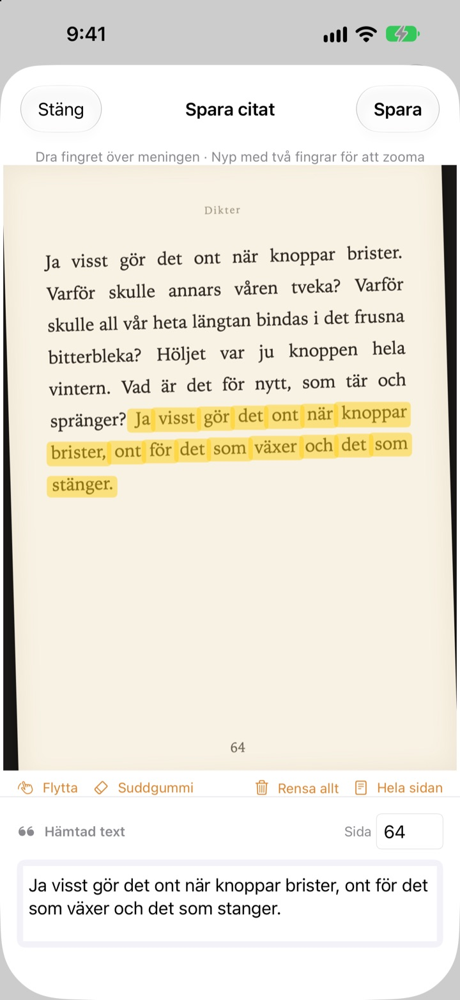
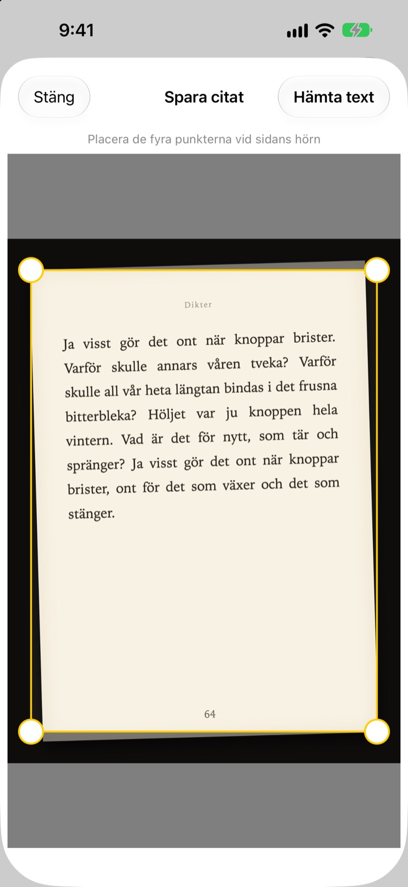
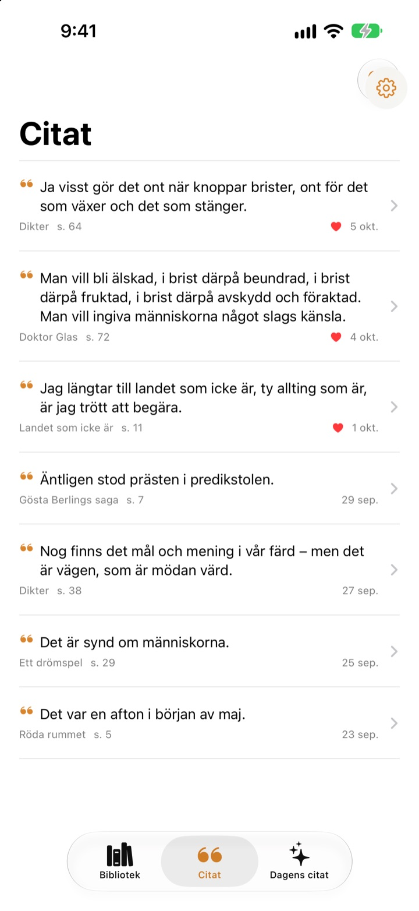
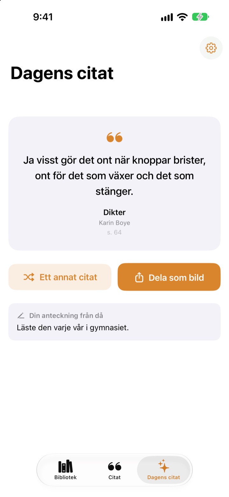

Stryk under
utan penna
Fota sidan, dra fingret över meningen du gillar, så sparas bara den som text. Bok och sidnummer följer med.
Alla funktioner är gratis, utan reklam.

Testa att dra
Dra fingret eller musen över valfri mening på sidan nedan. Bara orden du drar över hamnar på kortet.
Vart tar de fina meningarna vägen?
Det är en lånebok, så du kan inte stryka under. Ett foto av sidan försvinner bland tusentals bilder i kamerarullen. Skriver du av meningen i en anteckningsapp kommer titel och sidnummer sällan med. Bookmark Shot sparar meningen, boken och sidan med två rörelser: fota och dra.
Snett foto, rak sida
När du har fotat sidan passar du in de fyra hörnen, och även en snett tagen bild rätas ut som ett pappersark. Skarpare bokstäver ger bättre igenkänning.
Bilder som redan finns i ditt bildbibliotek går också bra.

Alla citat på ett ställe
Dina böcker står i ett bibliotek av omslag och dina citat samlas i en lista. Sök på mening, anteckning eller boktitel, och ge ett hjärta till de citat du vill läsa igen.
Lägg till en bok med ett foto av omslaget. Titel och författare läses åt dig, och ISBN också om streckkoden på baksidan syns.

Möt meningarna du glömt
Dagens citat ger dig varje dag tillbaka ett av dina sparade citat, tillsammans med anteckningen du skrev då. Ha det på hemskärmen eller låsskärmen med en widget.
Gillar du det? Gör om det till ett kort i papperslook och dela.

Kom igång i tre steg
- 1
Fota omslaget
Titel och författare fylls i. Ändra dem innan du sparar.
- 2
Fota sidan
Passa in de fyra hörnen så rätas den ut.
- 3
Dra över meningen
Sidnumret hittas och sparas med.
Verktyg på markeringsskärmen
- Dra med fingret
- markerar bara orden du drar över
- Nyp
- zooma in för att dra mer exakt
- Flytta
- dra runt en inzoomad sida
- Suddgummi
- tar bort ord du har dragit över
- Rensa allt
- tar bort alla markerade ord
- Hela sidan
- behåller all text på sidan
- Sidfält
- sidnumret som hittades, går att ändra
Med VoiceOver dubbeltrycker du på en rad för att lägga till eller ta bort den.
Alla funktioner är gratis
Gratis
- Lägg till böcker via omslaget, ISBN via streckkoden
- Uträtning av sidor och markering med fingret
- Automatiska sidnummer
- Bibliotek, citatsökning och favoriter
- Dagens citat med widgetar för hemskärmen och låsskärmen
- Dela som kortbild
- Synk med iCloud
Stöd utvecklaren
- Skicka gärna en liten dricks från Inställningar om du vill
- Dricks låser inte upp något. Appen är densamma oavsett
Ingen reklam, ingen prenumeration.
Frågor
Skickas mina foton eller citat någonstans?
Nej. Textigenkänningen sker helt på din enhet med Apple Vision, och dina foton och citat skickas aldrig till någon server. Appen fungerar också offline. Läs mer i integritetspolicyn nedan.
Vilka språk kan appen läsa?
Textigenkänningen görs av iOS på din enhet. Den läser böcker på koreanska, engelska, japanska, kinesiska, ryska och de flesta västeuropeiska språk, och i nyare iOS-versioner även thai, vietnamesiska, turkiska, indonesiska, polska, tjeckiska, nederländska och de nordiska språken. Grekiska kan inte kännas igen än.
Hur väljer jag bara den mening jag vill ha?
När du har fotat sidan drar du fingret över meningen, som med en överstrykningspenna, så markeras bara de orden. Nyp för att zooma in och få större precision. Det finns också Suddgummi, Rensa allt och Hela sidan.
Titeln eller författaren blev fel.
Omslagsigenkänningen gissar utifrån bokstävernas storlek och kan därför ta miste på mycket dekorativa omslag. Du kan rätta titel och författare innan du sparar boken.
Sidnumret är fel.
Det läses från siffrorna i fotots kant. Rätta det bara i sidfältet innan du sparar.
Kan jag se mina citat på flera enheter?
Ja. Är du inloggad på iCloud med samma Apple-konto och har iCloud Drive påslaget synkas dina böcker och citat automatiskt.
Hur lägger jag till widgeten?
Håll fingret på hemskärmen, tryck på Redigera > Lägg till widget och välj Bookmark Shot. För låsskärmen håller du fingret på den och trycker på Anpassa. Där visas Dagens citat.
Kameran fungerar inte.
Kontrollera under Inställningar > Bookmark Shot att åtkomst till kamera och bilder är tillåten. För att fota krävs en riktig iPhone.
Vad behöver jag?
En iPhone med iOS 17.0 eller senare.
Hur kontaktar jag er?
Skicka feedback från appens Inställningar (kugghjulet) eller mejla oss på adressen nedan. Vi svarar oftast inom två–tre dagar.
Frågor eller feedback? Skriv till leeo@kakao.com.